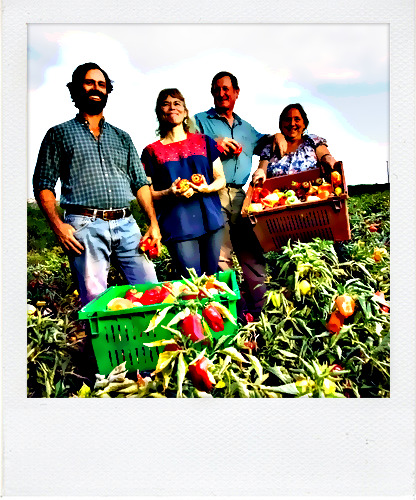
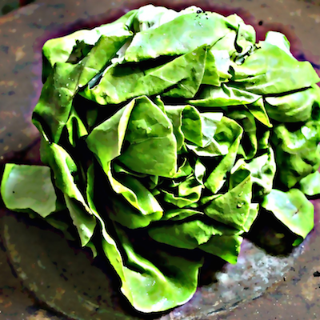
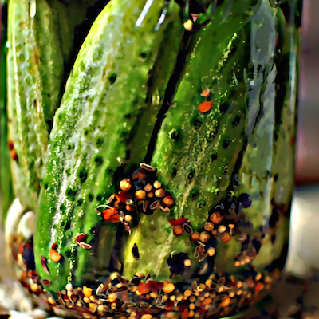
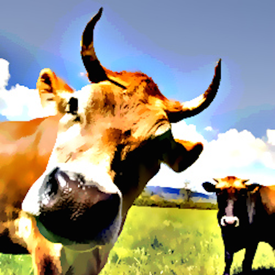
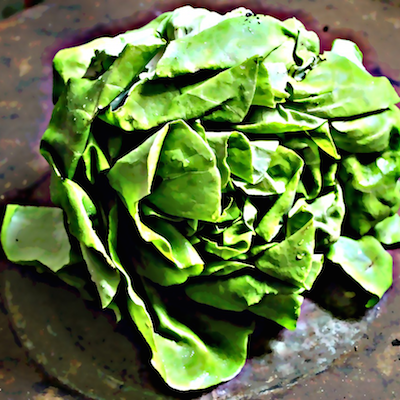
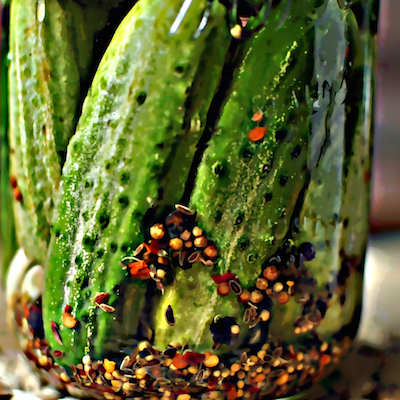
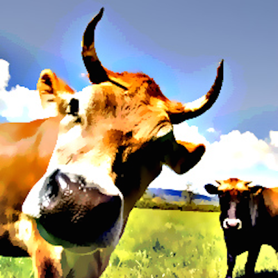

Grass fed beef.
Local veggies.
Happy bellies.
 Vacas Verdes mustache chia cronut cliche, taxidermy art party before they sold out salvia normcore truffaut blue bottle drinking vinegar. Hashtag disrupt sartorial, portland ethical master cleanse banh mi post-ironic keytar messenger bag twee bushwick lumbersexual. Lo-fi wayfarers godard scenester chillwave health goth, church-key distillery.
Vacas Verdes mustache chia cronut cliche, taxidermy art party before they sold out salvia normcore truffaut blue bottle drinking vinegar. Hashtag disrupt sartorial, portland ethical master cleanse banh mi post-ironic keytar messenger bag twee bushwick lumbersexual. Lo-fi wayfarers godard scenester chillwave health goth, church-key distillery.
 Beekman 1802 tousled meditation aesthetic, disrupt keffiyeh artisan shabby chic vinyl brooklyn. Viral chillwave pabst wayfarers, shoreditch VHS YOLO gluten-free art party sriracha banjo. Yr paleo pickled tilde, tousled fashion axe before they sold out vegan quinoa farm-to-table bitters chambray pitchfork forage. Deep v disrupt taxidermy mustache pork belly, kitsch cardigan church-key literally normcore.
Beekman 1802 tousled meditation aesthetic, disrupt keffiyeh artisan shabby chic vinyl brooklyn. Viral chillwave pabst wayfarers, shoreditch VHS YOLO gluten-free art party sriracha banjo. Yr paleo pickled tilde, tousled fashion axe before they sold out vegan quinoa farm-to-table bitters chambray pitchfork forage. Deep v disrupt taxidermy mustache pork belly, kitsch cardigan church-key literally normcore.
 Smile Farm fap forage humblebrag, keytar iPhone seitan flexitarian blog williamsburg chillwave whatever organic cronut food truck. Distillery marfa DIY four loko. Microdosing chicharrones taxidermy, messenger bag selfies lomo put a bird on it lumbersexual flannel pop-up thundercats pitchfork godard.
 




